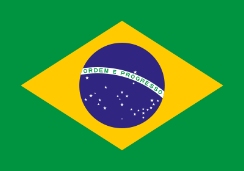
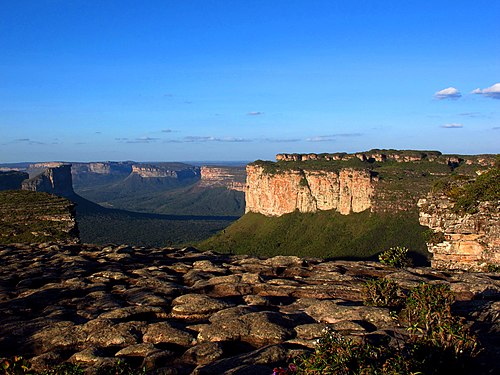

Brasil (República Federativa de Brasil o República Federal de Brasil)
Moneda
Real
Simbolo de moneda
R$
Región
Este de América del Sur
Población
182 032 604 habitantes (al 2003)
Zona Horaria
UTC -02:00 a -05:00 h
Bandera

Bandera de Brasil
División Territorial de Brasil
El territorio de Brasil está organizado administrativamente en 26 Estados y 1 Distrito Federal.
A continuración encontrará la información de tres de sus estados:
Descripción: Su capital es la ciudad de Rio Branco. Está ubicado en la región
noroeste del país, y que tiene como límites; Amazonas, al norte, Rondonia, al este, el Estado
Plurinacional de Bolivia, al sureste y la República del Perú, al oeste.
Atracciones más importantes: Entre las attraciones más importantes se encuentran.
En Rio Branco:
Visita a los seringais (áreas de extracción del caucho) para observar el proceso de
extracción de caucho y látex (a las afueras de Rio Branco).
A la Catedral Nossa Señora de Nazaré construida en 1959 reflejo de una basílica
romana.
Igrejinha de Ferro, capilla hecha de chapas de hierro.
Palacio de Rio Branco, con sus columnas jónicas.
Casa de Seringueiro, donde se encuentra una reproducción de la casa de Chico Mendes.
Museo da Borracha, con diferentes objetos hechos en caucho y algunos fósiles
prehistóricos
En el estado de Acre:
Plácido de Castro, se encuentra a 97 kilómetros de Rio Branco. Población situada a
orillas del río Abunã, posee playas fluviales salvajes y un parque ecológico de 34
has. y 113 especies de flora tropical.
Practicas de senderismo, ecoturismo, turismo de naturaleza y safaris fotográficos en
gran parte del estado.
Paseo en canoa por el Abuna para la observación de botos cor-de-rosa (peces de la
familia de los delfines).
Valle de Juruá, valle de grandes bellezas naturales, la principal ciudad es Cruzeiro
do Sul, situada a 648 kilómetros al oeste de Rio Branco, casi en la frontera con
Perú, está rodeada por igarapés, playas fluviales de arenas claras y finas y
vegetación salvaje de la floresta. Paseos en barco y pesca fluvial.
Bahía

Imagen de Chapada Diamantina en Bahía
Población: 14.14 millones habitantes (2022)
Superficie (km²) 564 733
Descripción Su capital es la ciudad de Salvador. Está ubicado en la región
Nordeste del país, limitando al norte con Piauí y Pernambuco, al noreste con Alagoas, Sergipe,
al este con el océano Atlántico, al sur con Espíritu Santo y Minas Gerais, y al oeste con Goiás
y Tocantíns.
Atracciones más importantes: Entre las atracciones más importantes se encuentran.
En Salvador de Bahia:
El Pelourinho, situado en el centro histórico de Salvador, es el conjunto de típicas
construcciones de estilo colonial portugués, edificios considerados verdaderas
reliquias arquitectónicas, declarado Patrimonio de la Humanidad por la UNESCO, en
1985.
La Catedral Basílica, ejemplo de la arquitectura portuguesa.
La Iglesia y convento de São Francisco, uno de los conjuntos religiosos más ricos de
Brasil.
Iglesia de la Ordem Terceira de São Francisco, de 1702, y un convento. La fachada
del templo, retranqueada, remite al barroco español.
Museo de Arte Sacro y el de Arte Moderno.
Antigua Facultad de Medicina, primer establecimiento de ese género en Brasil.
El elevador Lacerda que cuenta con cuatro cabinas y comunica, desde 1930, la
pendiente de 72 metros entre la plaza Tomé de Souza, en la Ciudad Alta y la plaza
Cairu, en la Ciudad Baja.
Mercado Modelo, con más de 300 puestos donde se compra artesanía y arte bahiano, al
lado de restaurantes y bares con comidas y bebidas típicas.
A pocos kms. de Salvador se encuentra la Iglesia bahiana del Senhor do Bonfim, donde
todos los años, en la segunda quincena de enero, bahianas con trajes típicos lavan
sus escalinatas.
En el estado de Bahia:
Isla de Itaparica, es la isla más famosa, próxima a Salvador, de las numerosas islas que
se sitúan a lo largo del litoral del estado de Bahia.
Porto Seguro, la importancia de su patrimonio histórico y natural le ha valido a Porto
Seguro el título de Patrimonio Natural Mundial de la UNESCO. Hoy, sus más de 90 kms. de
playas y los museos que nos presentan los orígenes de Brasil.
Morro de São Paulo, en la isla de Tinharé, una pequeña aldea llena de encanto,
tranquilidad y sin circulación de vehículos.
Costa do Cacau, región entre Ilhéus y Canavieiras, que debe su nombre al hecho de ser la
mayor productora de cacao en Bahia.
Parque Nacional Marinho de Abrolhos, donde los submarinistas pueden disfrutar de los
extensos corales. En Abrolhos esos corales suelen alcanzar hasta 20 m. de altura y no
siempre es necesario sumergirse para verlos.
Chapada Diamantina, región montañosa que dispone de potencial paisajístico constituido
por un gran número de ríos nacidos en la Chapada, por grutas y saltos de agua. La mayor
atracción es la Cachoeira da Fumaça, con un salto de agua libre de 400 m., se encuentran
los municipios de Lençóis, Mucujé, Palmeiras, Andaraí e Ibroara.
Rio de Janeiro
Imagen de sitios relevantes en Rio de Janeiro
Población: 6.211 millones (2022)
Superficie (km²): 1182,3
Descripción: Es la segunda ciudad más poblada de Brasil después de São Paulo. Es
considerada como la ciudad de Brasil más conocida a nivel Internacional.
Fue la capital del Imperio portugués entre 1808 y 1822 y, más tarde, la capital de Brasil desde
1822, cuando la nación declaró su independencia del país luso. Conservó ese rango hasta la
inauguración de Brasilia, en 1960.5
Es uno de los principales centros económicos, de recursos culturales y financieros de Brasil,
sede de empresas nacionales e internacionales.
Atracciones más importantes: Entre las attraciones más importantes se encuentran.
En el estado de Rio de Janeiro:
Al norte de la capital (Región de los Lagos) formada por más de 100 kms de playas y
lagunas de aguas saladas, son famosos los balnearios de: Búzios, Cabo Frio, Arraial
do Cabo, Rio das Ostras, Maricá y Saquarema.
Búzios está considerado como uno de los mejores emplazamientos del país para la
práctica de deportes náuticos, y entre sus playas se encuentran la Foca, Geribá,
Brava, do Forno, Olho-de-boi (área de difícil acceso donde se practica el naturismo)
y dos Amores (también centro de naturismo).
Arraial do Cabo, cuya población, de 19.000 habitantes, está formada, en su mayoría,
por pescadores.
Rio das Ostras es una ciudad tranquila, frecuentada por aquellos que buscan lugares
tranquilos para la pesca.